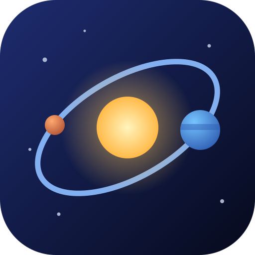

惑星系創造〜創って、見守って、集める〜
初期の円盤
青 = ガス、橙 = 固体（惑星の材料）、緑の帯 = ハビタブルゾーン、点線 = スノーライン（この外側では氷ができる）、白い点 = 惑星の種ができる位置（大きいほど重い）。種の数と位置は、円盤の条件から決まります。条件を引き直したり、値を変えたりすると、円盤も種も変わります。
詳細設定
惑星の系統（色）の凡例
点の大きさは惑星の半径です。数字は、いま軌道上にある個数です。軌道は、離心率が大きいほど細長い楕円（オレンジ色の線）で描きます。
できごとのスロー
できごとの前後は、時間の進みが自動でゆっくりになります。完成した後も惑星は回り続けます。止めたいときは「一時停止」を押すか、惑星をタップしてください。止まっている間は、惑星の情報が図の上に出ます。
図の見かた（印の意味）
できごと（押すと、その時に戻れます）
なぜこの惑星系になったか
くわしい理由
できごとの年表（押すと、その時に戻れます）
できた惑星
マスは「分類 × 特徴タグ」。埋まったマスを押すと、その惑星だけを表示します。「—」は、この世界ではまだ見つかっていない組み合わせです。